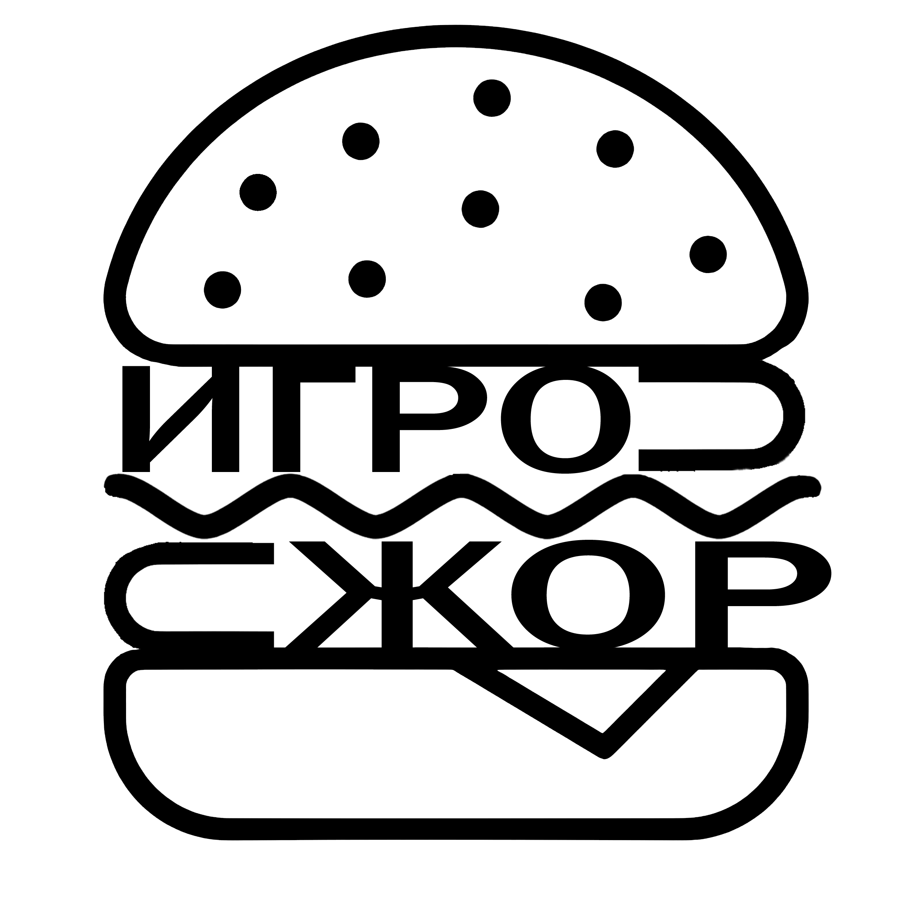
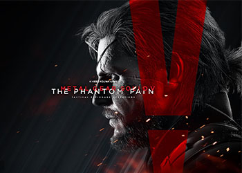
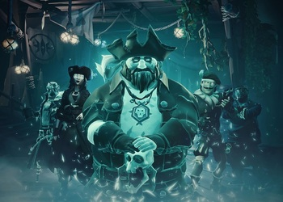
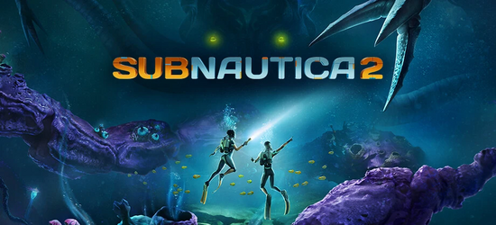
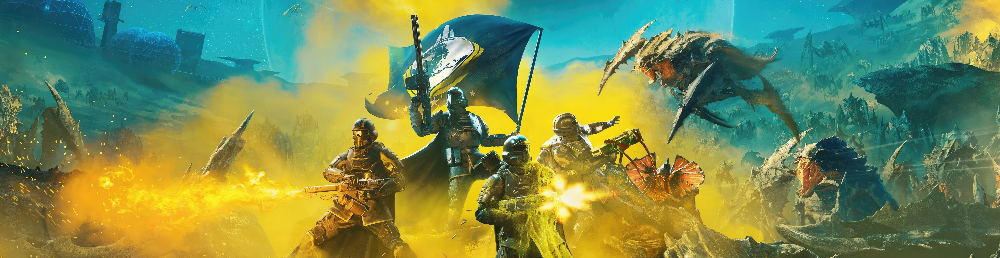

«ИгроЖор» — российский журнал про видеоигры. Издание посвящено современным играм для различных платформ, таких, как ПК, игровые приставки, портативные консоли. В журнале публикуются аналитические материалы, новости игровой индустрии, и многое другое!


Metal Gear Solid V: The Phantom Pain (2015)
Компьютерная игра в жанре action-adventure и стелс-экшен с открытым миром, разработанная студией Kojima Productions под руководством геймдизайнера Хидэо Кодзимы и изданная компанией Konami в 2015 году.

Sea Of Thieves (2018)
Игра от студии Rare, мультиплеерная ролевая песочница про пиратов. В ней игроки объединяются в команды, управляя персонажами-пиратами, чтобы вместе путешествовать на парусных кораблях в поисках сокровищ и приключений.

Subnautica 2 (2025)
Subnautica 2 — предстоящая кроссплатформенная кооперативная видеоигра в жанрах приключенческой игры и симулятора выживания с открытым миром, разрабатываемая американской студией Unknown Worlds Entertainment и издаваемая корейской компанией Krafton. Сиквел Subnautica и Subnautica: Below Zero, происходящий спустя некоторое время после событий последней части.

Лучшие игры 2024 года!
«ИгроЖор» вспоминает лучшие игры, вышедшие в 2024 году — динамичные, красивые и атмосферные!
Залипнуть с друзьями: шесть необычных кооперативных игр разных жанров
Видеоигры — это весело. Но ещё веселее становится, когда в игры можно пригласить друзей. Кооперативные игры в наше время выходят часто, а глаза разбегаются отих количества. Поэтому «ИгроЖор» для вас подобрал список лучших кооперативных игр, которые мы однозначно рекомендуем.
Персонажи Натлана в Genshin Impact — описание и особенности героев
В этом году разработчики Genshin Impact добавили в игру новый регион — Натлан. Это совершенно уникальной область, в которой проживает множество необычных персонажей. Сегодня мы расскажем о героях Натлана и отметим наиболее важную информацию о каждом из них.